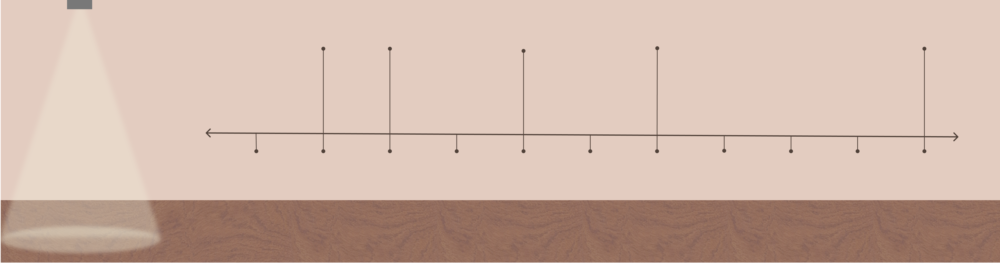

1948–49
Grey Walters skilpadder
Små robot-skilpadder, Elmer og Elsie, ble bygget med sensorer og motorstyring.
De kunne navigere mot lys, unngå hindringer og returnere til lading når batteriet var lavt.
Disse regnes som de første virkelig autonome, elektroniske robotene i historien.
1954
Unimate
Den aller første industrielle roboten.
George Devol oppfant og patenterte roboten dette året.
Den ble først installert i en General Motors fabrikk i 1961 for å utføre repeterende oppgaver som sveising og materialhåndtering.
Unimate revolusjonerte produksjonsindustrien ved å øke effektiviteten og redusere behovet for menneskelig arbeidskraft i farlige miljøer.
2023
Tesla Bot Gen 2
Også kjent som Optimus Gen 2, er en humanoid robot utviklet av Tesla, Inc.
først demonstrert i 2023 og skal ha full produksjon i 2026.
Roboter integreres i samfunnet som hjelpere, guider og servicearbeidere med realistiske bevegelser og AI.
Overgangen fra teknologi til sosiale verktøy er nå i full gang.
1973
WABOT-1
Japans første humanoide robot
Bygget av Waseda University. Den kunne gå, gripe objekter med hender og kommunisere på japansk.
Den hadde sensorer for å måle avstand og lyd, og kunne spille musikk på et piano.
WABOT-1 representerte et tidlig skritt mot humanoide roboter med avanserte motoriske og sensoriske evner.
1999
AIBO
Sonys robotkjæledyr.
AIBO (Artificial Intelligence robot) er en serie av robotiske hunder designet for å være interaktive kjæledyr.
den kunne lære fra sine omgivelser, gjenkjenne ansikter, respondere på kommandoer og vise unike personligheter basert på interaksjon med eiere.
Den kombinerer avansert robotteknologi med kunstig intelligens for å skape en engasjerende opplevelse for brukerne.